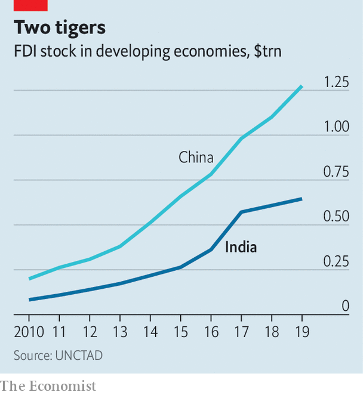
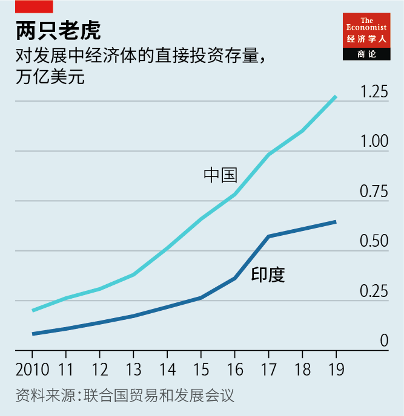

Text
2021-05-03T15:43:09+00:00
India Inc
印度企业界
印度企業界
India has proved to be a popular—and clever—investor in poor countries
在贫穷国家，印度已成为受欢迎的精明投资者
在貧窮國家，印度已成為受歡迎的精明投資者
It cannot match China’s heft in foreign investment, but offers lessons for other investors
在海外投资实力方面它无法与中国比肩，但为其他投资者提供了经验【深度】
在海外投資實力方面它無法與中國比肩，但為其他投資者提供了經驗【深度】
IN CENTRAL Lusaka a brand-new flyover flutters with the green, white and saffron of the Indian flag. Throughout the Zambian capital lorries produced by Tata Motors, part of the steel-to-tech Tata empire, are used for everything from construction to rubbish collection. Signs inside the vehicles instruct drivers in both English and Hindi. The lorries’ occupants phone each other over a mobile network run by Bharti Airtel, an Indian telecoms firm.
在赞比亚首都卢萨卡（Lusaka）的中部，一座新建的天桥上飘动着绿、白、橙这三种印度国旗包含的颜色。在这座城市里，从建筑工地到垃圾收集，几乎处处都在用塔塔汽车公司（Tata Motors，其所属的塔塔帝国的业务涵盖从钢铁到科技的众多部门）生产的卡车。卡车内的驾驶员指示以英语和印地语两种语言写成。车内人员通过印度的巴帝电信（Bharti Airtel）运营的移动网络相互通话。
在贊比亞首都盧薩卡（Lusaka）的中部，一座新建的天橋上飄動着綠、白、橙這三種印度國旗包含的顏色。在這座城市裡，從建築工地到垃圾收集，幾乎處處都在用塔塔汽車公司（Tata Motors，其所屬的塔塔帝國的業務涵蓋從鋼鐵到科技的眾多部門）生產的卡車。卡車內的駕駛員指示以英語和印地語兩種語言寫成。車內人員通過印度的巴帝電信（Bharti Airtel）運營的移動網絡相互通話。
Many Zambians, like people in many other developing countries, complain loudly and often about the Chinese firms that are big local investors. India is also a big commercial presence but no one bats an eyelid. Tata Motors has huge assembly plants in many countries, including South Africa and Malaysia. Bharti Airtel is one of the biggest telecoms operators in Africa. The Aditya Birla Group is the world’s largest producer of carbon black, an ingredient in car tyres. It is one of Egypt’s biggest industrial investors and exporters.
和其他很多发展中国家的人一样，许多赞比亚人也常常大声抱怨在当地大举投资的中国公司。印度在这里的商业投资也很多，倒没什么人有意见。塔塔汽车在包括南非和马来西亚在内的许多国家都设有大型装配厂。巴帝电信是非洲最大的电信运营商之一。埃迪亚贝拉集团（Aditya Birla Group）是全球最大的炭黑生产商，炭黑是生产汽车轮胎的一种材料。该集团是埃及最大的工业投资者和出口商之一。
和其他很多發展中國家的人一樣，許多贊比亞人也常常大聲抱怨在當地大舉投資的中國公司。印度在這裡的商業投資也很多，倒沒什麼人有意見。塔塔汽車在包括南非和馬來西亞在內的許多國家都設有大型裝配廠。巴帝電信是非洲最大的電信運營商之一。埃迪亞貝拉集團（Aditya Birla Group）是全球最大的炭黑生產商，炭黑是生產汽車輪胎的一種材料。該集團是埃及最大的工業投資者和出口商之一。
Even in sectors governments deem strategic, such as infrastructure and communications, Indian foreign direct investment (FDI) is not viewed as geopolitical scheming or hegemonic ambition. “That’s one of the selling points for India,” says Gareth Price of Chatham House, a British think-tank. “With the obvious exceptions of Pakistan and China, everyone is kind of all right with India.”
即使在基础设施和通信等政府认为具有战略意义的领域，印度的外商直接投资（foreign direct investment，以下简称FDI）也不被认为存在地缘政治图谋或霸权野心。“这是印度的卖点之一，”英国智库查塔姆研究所（Chatham House）的加雷斯·普莱斯（Gareth Price）说，“除了巴基斯坦和中国这两个明显的例外，似乎人人都不反对印度的投资。”
即使在基礎設施和通信等政府認為具有戰略意義的領域，印度的外商直接投資（foreign direct investment，以下簡稱FDI）也不被認為存在地緣政治圖謀或霸權野心。“這是印度的賣點之一，”英國智庫查塔姆研究所（Chatham House）的加雷斯·普萊斯（Gareth Price）說，“除了巴基斯坦和中國這兩個明顯的例外，似乎人人都不反對印度的投資。”
India was once compared to China as an emerging-market power with capital to splurge. The spectacular rise in Chinese investment over the past decade or so has scotched that analogy. Now poor countries are trying to finance their recovery from covid-19 without deepening their debt or their dependence on China. India’s forays are tiny in comparison—around 7% of China’s total stock of FDI in developing economies (not counting investment in Hong Kong, which is sometimes included). But its approach has lessons for foreign investors trying to go about their business without setting off alarm bells.
人们曾把印度与中国相提并论，视之为有大把资本可挥洒的新兴市场大国。过去十来年里中国海外投资的惊人增长让两国失去了可比性。现在，贫穷国家正努力为疫情后的复苏筹措资金，但不想加重债务负担或增加对中国的依赖。印度的进军相对而言规模微小——约为中国在发展中经济体FDI存量的7％左右（不包括在香港地区的投资，有些统计会将此计算在内）。但是，在如何能推进投资而不触发警铃这一点上，印度的做法为外国投资者提供了经验。
人們曾把印度與中國相提並論，視之為有大把資本可揮灑的新興市場大國。過去十來年裡中國海外投資的驚人增長讓兩國失去了可比性。現在，貧窮國家正努力為疫情後的復蘇籌措資金，但不想加重債務負擔或增加對中國的依賴。印度的進軍相對而言規模微小——約為中國在發展中經濟體FDI存量的7％左右（不包括在香港地區的投資，有些統計會將此計算在內）。但是，在如何能推進投資而不觸發警鈴這一點上，印度的做法為外國投資者提供了經驗。
Firms from emerging markets have long invested in other emerging markets. Their experience at home of delays, chaos and financing constraints provide useful preparation. India helped organise the Bandung conference in 1955, which discussed “South-South” co-operation.
来自新兴市场的公司对其他新兴市场的投资由来已久。它们在本国市场遭遇过的拖延、混乱和融资限制为它们做了很好的准备。印度在1955年协助组织了探讨“南南”合作的万隆会议。
來自新興市場的公司對其他新興市場的投資由來已久。它們在本國市場遭遇過的拖延、混亂和融資限制為它們做了很好的準備。印度在1955年協助組織了探討“南南”合作的萬隆會議。
Indian investments in the rich world are more likely to grab headlines. Deals such as the Tata Group’s acquisition of Tetley Tea or Jaguar Land Rover involve household names, hundreds of millions of dollars and a smack of reverse imperialism. But India’s stock of outward FDI to the poor world is about the same as its stake in rich countries, and has been growing more steadily over time. In 2019 it reached roughly $46bn, according to the latest estimates by the UN Conference on Trade and Development, up from around $40bn in 2010. About $30bn of that is in Asia and around $13bn in Africa.
印度在富裕国家的投资更有可能登上头条新闻。塔塔集团收购的公司包括泰特莱茶叶（Tetley Tea）和捷豹路虎（Jaguar Land Rover）等家喻户晓的企业，投资金额以亿美元计，带有那么点“反向帝国主义”的意思。但是，印度对穷国的FDI存量与在富国的投资大致相当，并且长期以来增长更为稳定。根据联合国贸发会议的最新估计，2019年，印度对穷国的FDI存量为约460亿美元，而2010年为约400亿美元。其中约300亿美元在亚洲，约130亿美元在非洲。
印度在富裕國家的投資更有可能登上頭條新聞。塔塔集團收購的公司包括泰特萊茶葉（Tetley Tea）和捷豹路虎（Jaguar Land Rover）等家喻戶曉的企業，投資金額以億美元計，帶有那麼點“反向帝國主義”的意思。但是，印度對窮國的FDI存量與在富國的投資大致相當，並且長期以來增長更為穩定。根據聯合國貿發會議的最新估計，2019年，印度對窮國的FDI存量為約460億美元，而2010年為約400億美元。其中約300億美元在亞洲，約130億美元在非洲。
Some of the data are sketchy. Multinational companies headquartered in India generally set up local subsidiaries. They route money through tax havens such as Mauritius. And the 18m-odd overseas Indians (those born in the country or holding Indian citizenship) include entrepreneurs who switch passports and register businesses locally. “It becomes a jigsaw,” says Jai Bhatia of Cambridge University.
部分数据不太完整。总部设在印度的跨国公司一般会设立地方子公司。它们通过毛里求斯等避税天堂转移资金。1800多万海外印度人（在印度出生或拥有印度国籍的人）当中，有些企业家用别国护照在当地注册公司。“像拼图一样复杂。”剑桥大学的贾伊·巴蒂亚（Jai Bhatia）说。
部分數據不太完整。總部設在印度的跨國公司一般會設立地方子公司。它們通過毛里求斯等避稅天堂轉移資金。1800多萬海外印度人（在印度出生或擁有印度國籍的人）當中，有些企業家用別國護照在當地註冊公司。“像拼圖一樣複雜。”劍橋大學的賈伊·巴蒂亞（Jai Bhatia）說。
Even if some pieces of the puzzle are missing, those that remain demonstrate the most obvious reason investment from India is viewed with less suspicion than that from China: scale. Even as Indian investment has grown steadily, Chinese investment in the poor world has soared: from $83bn in 2010 to $645bn in 2019.
即使这个拼图不完整，但从已有的部分看，来自印度的投资之所以引发的疑虑少于中国，有一个最显著的原因——规模。尽管印度的投资稳步增长，但中国对贫困国家的投资却是暴涨，从2010年的830亿美元激增至2019年的6450亿美元。
即使這個拼圖不完整，但從已有的部分看，來自印度的投資之所以引發的疑慮少於中國，有一個最顯著的原因——規模。儘管印度的投資穩步增長，但中國對貧困國家的投資卻是暴漲，從2010年的830億美元激增至2019年的6450億美元。
Another reason is that, unlike Chinese investment, little of India’s FDI comes from state-controlled companies, which are often suspected of operating with one eye on geopolitical strategy and foreign-policy goals. ONGC Videsh is one of the few sizeable government-owned Indian businesses operating abroad. It has bought up assets in countries as far apart as Mozambique and Colombia.
另一个原因是，与中国的投资不同，印度的FDI很少来自国家控股的公司，而这类公司常被怀疑在投资的同时兼顾地缘政治战略和外交政策目标。ONGC Videsh是为数不多在海外经营的印度大型国有企业之一，它已在像莫桑比克和哥伦比亚这样天南地北的国家收购了资产。
另一個原因是，與中國的投資不同，印度的FDI很少來自國家控股的公司，而這類公司常被懷疑在投資的同時兼顧地緣政治戰略和外交政策目標。ONGC Videsh是為數不多在海外經營的印度大型國有企業之一，它已在像莫桑比克和哥倫比亞這樣天南地北的國家收購了資產。
But its firepower is not in the same league as its Chinese peers. Sinopec, a state-owned oil company, first muscled its way into the Angolan oil industry in the mid-2000s. It gazumped ONGC to buy a stake in a block from Shell, an oil-and-gas giant. Jonathan Hillman of the Centre for Strategic and International Studies, a think-tank in Washington, points out that India has nothing comparable to China’s Belt-and-Road Initiative, a global infrastructure-building scheme. “The Indian government hasn’t spent as much time presenting grand visions,” he says.
但这家公司的火力和它的中国同行不在一个级别。国有石油公司中石化在2005年前后首次强势挤入安哥拉的石油工业。它压过本已签署了初步协议的ONGC，抢购了石油和天然气巨头壳牌手中一个石油区块的股权。华盛顿智库战略与国际研究中心的乔纳森·希尔曼（Jonathan Hillman）指出，印度没有可与中国的全球基建计划“一带一路”倡议相提并论的东西。“印度政府没花那么多时间来描述宏伟的愿景。”他说。
但這家公司的火力和它的中國同行不在一個級別。國有石油公司中石化在2005年前後首次強勢擠入安哥拉的石油工業。它壓過本已簽署了初步協議的ONGC，搶購了石油和天然氣巨頭殼牌手中一個石油區塊的股權。華盛頓智庫戰略與國際研究中心的喬納森·希爾曼（Jonathan Hillman）指出，印度沒有可與中國的全球基建計劃“一帶一路”倡議相提並論的東西。“印度政府沒花那麼多時間來描述宏偉的願景。”他說。
Most of India’s FDI comes instead from privately held businesses, which undertake projects overseas for purely commercial reasons. They include recently arrived entrepreneurs, (disparagingly dubbed “Rockets” in Kenya for their intention of making fortunes and quickly heading home), multinational investors headquartered in India and diaspora families who have been doing business abroad, especially in Africa, for generations.
印度的FDI大部分来自私人企业，在海外投资纯粹是出于商业目的。它们包括近期来到海外的企业家（因为打算赚一票就回国而在肯尼亚被贬称为“火箭党”）、总部设在印度的跨国投资者，以及已经好几代侨居海外（尤其是非洲）做生意的印度裔家庭。
印度的FDI大部分來自私人企業，在海外投資純粹是出於商業目的。它們包括近期來到海外的企業家（因為打算賺一票就回國而在肯尼亞被貶稱為“火箭黨”）、總部設在印度的跨國投資者，以及已經好幾代僑居海外（尤其是非洲）做生意的印度裔家庭。
Indian traders began settling around the edges of the Indian Ocean centuries ago. In the 19th century thousands more were sent to far corners of the British empire, to work on plantations in Mauritius and build railways in Kenya. Many stayed and built their own businesses. Others braved long journeys on dhows to join them in Africa. “We tend to view things ahistorically and through a geopolitical prism, so it is all about China,” says Parag Khanna, an international-relations expert whose father worked for the Tatas in Africa. In a sign of China’s rise on the continent, the railway that drew Indians to Kenya in the 1890s has been replaced by the Madaraka Express, a Chinese-built line named after the anniversary of Kenyan independence from Britain (madaraka means “ruling power” in Swahili).
几个世纪前，印度商人开始在印度洋沿岸定居。19世纪，成千上万的人被派往大英帝国的各个遥远角落，在毛里求斯的种植园干活，在肯尼亚修建铁路。许多人留了下来，建立了自己的企业。另外一些人冒险乘坐单桅三角帆船长途跋涉，加入已经在非洲的印度人队伍。“我们倾向于撇开历史，从地缘政治的角度看问题，所以满眼都是中国。”国际关系专家帕拉格·卡纳（Parag Khanna）说，他的父亲曾在非洲为塔塔工作。作为中国势力在非洲大陆崛起的标志，19世纪90年代吸引印度人前往肯尼亚的铁路已被中国修建的马达拉卡快线（Madaraka Express）取代，这条新铁路的名字来自纪念肯尼亚脱离英国的自治日马达拉卡节（马达拉卡在斯瓦希里语中意为“统治权力”）。
幾個世紀前，印度商人開始在印度洋沿岸定居。19世紀，成千上萬的人被派往大英帝國的各個遙遠角落，在毛里求斯的種植園幹活，在肯尼亞修建鐵路。許多人留了下來，建立了自己的企業。另外一些人冒險乘坐單桅三角帆船長途跋涉，加入已經在非洲的印度人隊伍。“我們傾向於撇開歷史，從地緣政治的角度看問題，所以滿眼都是中國。”國際關係專家帕拉格·卡納（Parag Khanna）說，他的父親曾在非洲為塔塔工作。作為中國勢力在非洲大陸崛起的標誌，19世紀90年代吸引印度人前往肯尼亞的鐵路已被中國修建的馬達拉卡快線（Madaraka Express）取代，這條新鐵路的名字來自紀念肯尼亞脫離英國的自治日馬達拉卡節（馬達拉卡在斯瓦希里語中意為“統治權力”）。
The Indian diaspora has sometimes experienced resentment. In the 1970s, for example, Idi Amin, a despot, expelled Asians from Uganda and seized their property. But by and large, a shared history has bred familiarity. Kenya’s government has gone so far as to recognise Asians as the country’s 44th official tribe. Vimal Shah, whose grandfather emigrated from India, started the Bidco Africa juice-to-cattlefeed empire with his father and brother about 35 years ago. He knows the best Indian food in Nairobi and volunteers at the Jain community centre, but has a Kenyan passport and sees himself as thoroughly Kenyan. “I’m not a desi [local] from India,” Mr Shah says.
印度侨民有时也会遭遇怨憎。例如，在上世纪70年代，独裁者伊迪·阿明（Idi Amin）将亚洲人赶出乌干达，并没收了他们的财产。但总的来说，共同走过的历史建立了亲切感。肯尼亚政府甚至承认亚洲人为该国第44个正式部落。祖父是印度移民的维纳姆·沙阿（Vimal Shah）在大约35年前与父亲和兄弟一起创立了博达集团（Bidco Africa），这个企业帝国的业务覆盖从果汁到牛饲料的众多领域。他知道内罗毕哪里有最地道的印度美食，还在印度耆那教社区中心当志愿者，但他拿的是肯尼亚护照，并且认为自己完完全全是肯尼亚人。“我不是印度来的移民。”沙阿说。
印度僑民有時也會遭遇怨憎。例如，在上世紀70年代，獨裁者伊迪·阿明（Idi Amin）將亞洲人趕出烏干達，並沒收了他們的財產。但總的來說，共同走過的歷史建立了親切感。肯尼亞政府甚至承認亞洲人為該國第44個正式部落。祖父是印度移民的維納姆·沙阿（Vimal Shah）在大約35年前與父親和兄弟一起創立了博達集團（Bidco Africa），這個企業帝國的業務覆蓋從果汁到牛飼料的眾多領域。他知道內羅畢哪裡有最地道的印度美食，還在印度耆那教社區中心當志願者，但他拿的是肯尼亞護照，並且認為自己完完全全是肯尼亞人。“我不是印度來的移民。”沙阿說。
After independence, industrialists looked beyond India’s borders to free themselves from red tape. One of India Inc’s first foreign ventures was a textile mill built by the Birla Group in Ethiopia in 1959. The conglomerate then expanded across South-East Asia, where economies were opening up. A second, bigger, rush of FDI came in the 1990s, when India loosened capital controls. Last year Indian businesses set up 4,590 projects abroad, up from 395 in 2000, according to data crunched by Prema-chandra Athukorala of the Australian National University.
印度独立之后，实业家们将目光投向海外以摆脱官僚主义繁文缛节的束缚。印度企业界的第一批外国投资项目中就有埃迪亚贝拉集团于1959年在埃塞俄比亚建立的一家纺织厂。随后，这家企业集团将业务拓展到了逐步开放的东南亚经济体。上世纪90年代，印度放宽了资本管制，掀起了规模更大的第二波FDI热潮。根据澳大利亚国立大学（Australian National University）的普雷玛-钱德拉·阿杜克拉拉（Prema-chandra Athukorala）整理的数据，去年印度企业在海外投资了4590个项目，2000年的数字是395个。
印度獨立之後，實業家們將目光投向海外以擺脫官僚主義繁文縟節的束縛。印度企業界的第一批外國投資項目中就有埃迪亞貝拉集團於1959年在埃塞俄比亞建立的一家紡織廠。隨後，這家企業集團將業務拓展到了逐步開放的東南亞經濟體。上世紀90年代，印度放寬了資本管制，掀起了規模更大的第二波FDI熱潮。根據澳大利亞國立大學（Australian National University）的普雷瑪-錢德拉·阿杜克拉拉（Prema-chandra Athukorala）整理的數據，去年印度企業在海外投資了4590個項目，2000年的數字是395個。
A third reason Indian investment tends to arouse less resentment than that from China is that Indian companies have a largely justified reputation for trying harder than the Chinese to hire and buy locally. In 2006 the World Bank surveyed almost 450 businesses in Africa. On average, Chinese firms employed almost a fifth of their workers from China and other East Asian countries, whereas Indian firms brought less than 10% of their workers from India. The Chinese businesses imported 60% of new machinery from China; their Indian peers bought just 22% from India. That trend continues today, says Harry Broadman, the economist who led the research.
印度投资引起的不满往往少于中国的第三个原因，是印度企业有一个总体来说名副其实的声誉，那就是它们在从当地聘雇和采购方面比中国企业更尽心。2006年，世界银行调查了非洲近450家企业。平均而言，中国企业从中国和其他东亚国家雇用了将近五分之一的员工，而印度企业从印度带去的员工不到10％。中国企业从中国进口了60％的新机械设备，而印度企业仅从印度购买了22%。这种趋势持续至今，领导这项调研的经济学家哈里·布罗德曼（Harry Broadman）说。
印度投資引起的不滿往往少於中國的第三個原因，是印度企業有一個總體來說名副其實的聲譽，那就是它們在從當地聘僱和採購方面比中國企業更盡心。2006年，世界銀行調查了非洲近450家企業。平均而言，中國企業從中國和其他東亞國家僱用了將近五分之一的員工，而印度企業從印度帶去的員工不到10％。中國企業從中國進口了60％的新機械設備，而印度企業僅從印度購買了22%。這種趨勢持續至今，領導這項調研的經濟學家哈里·布羅德曼（Harry Broadman）說。
The fact that many Indian companies are still family-run may have something to do with that. Executives worry about both their founders’ reputation and the way their actions reflect on Mother India. Rudrarup Maitra, who looks after Tata Motors’ international commercial-vehicles business, talks about the company’s contributions to development in its overseas markets, including its efforts to get ambulances to Sri Lanka and rubbish trucks to Nigeria. “There is definitely a responsibility we have to brand India,” he says.
这可能和许多印度公司仍是家族企业有一定关系。公司高管会顾及创始人的声誉，以及自身行为对祖国形象的影响。塔塔汽车负责商用车辆国际业务的鲁德拉鲁普·迈特拉（Rudrarup Maitra）谈到公司为其所在海外市场的发展所做的贡献，比如为斯里兰卡提供救护车，给尼日利亚带去垃圾运输车。“我们对印度这个品牌绝对负有责任。”他说。
這可能和許多印度公司仍是家族企業有一定關係。公司高管會顧及創始人的聲譽，以及自身行為對祖國形象的影響。塔塔汽車負責商用車輛國際業務的魯德拉魯普·邁特拉（Rudrarup Maitra）談到公司為其所在海外市場的發展所做的貢獻，比如為斯里蘭卡提供救護車，給尼日利亞帶去垃圾運輸車。“我們對印度這個品牌絕對負有責任。”他說。
Some think India does too little to parlay its diaspora into investment. India’s first prime minister, Jawaharlal Nehru, was a staunch believer in anti-colonial solidarity and refused to use overseas businesses as a tool for foreign policy. Successive governments have followed his lead and offered at best limited support to Indian businesses’ efforts abroad. Diplomats complain that they can do little to help their compatriots beyond courting local governments and rolling out the red carpet for visiting industrialists. Manu Chandaria, who was born in Kenya over 90 years ago to Gujarati parents and is now one of east Africa’s best-known industrialists, laments that the government in New Delhi has not made the most of ethnic Indians abroad, using them as neither “a tool” nor “a resource”.
有些人认为印度没有很好地利用侨民扩大对外投资。印度第一任总理贾瓦哈拉尔·尼赫鲁坚信要团结起来反对殖民统治，拒绝把海外企业用作外交政策工具。后来的历届政府都继承了他的做法，顶多为印度企业的海外投资提供一些有限的支持。外交官们抱怨说，除了讨好地方政府和隆重欢迎到访的实业家之外，他们帮不上海外同胞什么忙。马努·坎达利亚（Manu Chandaria）90多年前出生于肯尼亚，父母是印度古吉拉特人，他现在是东非最著名的实业家之一。他对印度政府没有充分利用海外印度裔感到痛惜，认为政府确实没有把他们当“工具”，但也没有把他们用作“资源”。
有些人認為印度沒有很好地利用僑民擴大對外投資。印度第一任總理賈瓦哈拉爾·尼赫魯堅信要團結起來反對殖民統治，拒絕把海外企業用作外交政策工具。後來的歷屆政府都繼承了他的做法，頂多為印度企業的海外投資提供一些有限的支持。外交官們抱怨說，除了討好地方政府和隆重歡迎到訪的實業家之外，他們幫不上海外同胞什麼忙。馬努·坎達利亞（Manu Chandaria）90多年前出生於肯尼亞，父母是印度古吉拉特人，他現在是東非最著名的實業家之一。他對印度政府沒有充分利用海外印度裔感到痛惜，認為政府確實沒有把他們當“工具”，但也沒有把他們用作“資源”。
Flying the flag
国旗飘扬
國旗飄揚
Gurjit Singh, a former Indian ambassador to Ethiopia, Germany and Indonesia, suggests that India Inc might pack a bigger punch if India’s government increased support to cut the local cost of financing investment overseas. India provided $7bn in official medium- and long-term export credit in 2019, according to the Export-Import Bank of the United States. That makes it the world’s fourth-largest provider, but is still far behind China’s $33.5bn.
曾任印度驻埃塞俄比亚、德国和印度尼西亚大使的古吉特·辛格（Gurjit Singh）表示，如果印度政府加大支持力度，削减海外投资融资的本地成本，印度企业可能会有更大的影响力。根据美国进出口银行的数据，印度在2019年提供了70亿美元的官方中长期出口信贷。这一规模位居全球第四，但仍远远落后于中国的335亿美元。
曾任印度駐埃塞俄比亞、德國和印度尼西亞大使的古吉特·辛格（Gurjit Singh）表示，如果印度政府加大支持力度，削減海外投資融資的本地成本，印度企業可能會有更大的影響力。根據美國進出口銀行的數據，印度在2019年提供了70億美元的官方中長期出口信貸。這一規模位居全球第四，但仍遠遠落後於中國的335億美元。
But Indian companies’ independence from their home government also brings an advantage: it contrasts favourably with the perception that Chinese ones will unquestioningly do the Chinese state’s bidding. Bharti Airtel, which has had a large share of Africa’s telecoms market since its 2010 acquisition of Zain Africa, a Kuwaiti telecoms company, has obvious strategic power. Akhil Gupta, a high-up at the company, says Airtel would “without question” do anything an African government asked, including disconnecting its service. But he would certainly not take orders from the Indian government on how to run Airtel’s overseas operations, he says. “That is the beauty of democracy.”
不过，独立于印度政府对印度公司而言也是一项优势，这与人们眼中会无条件唯中国政府马首是瞻的中国公司形成了鲜明的对比。自2010年收购科威特电信公司Zain Africa以来，巴帝电信在非洲电信市场占据了很大的份额，拥有显而易见的战略力量。公司高管阿克希尔·古普塔（Akhil Gupta）说，巴帝电信“毫无疑问”会满足非洲政府提出的任何要求，包括断网。但在运作公司的海外业务方面，他肯定不会听从印度政府的命令，他说。“这就是民主的魅力。”
不過，獨立於印度政府對印度公司而言也是一項優勢，這與人們眼中會無條件唯中國政府馬首是瞻的中國公司形成了鮮明的對比。自2010年收購科威特電信公司Zain Africa以來，巴帝電信在非洲電信市場佔據了很大的份額，擁有顯而易見的戰略力量。公司高管阿克希爾·古普塔（Akhil Gupta）說，巴帝電信“毫無疑問”會滿足非洲政府提出的任何要求，包括斷網。但在運作公司的海外業務方面，他肯定不會聽從印度政府的命令，他說。“這就是民主的魅力。”
Not all businessfolk with Indian roots excel as ambassadors for the motherland. Mahatma Gandhi, who spent time in South Africa as a shipping lawyer, created a good impression. The Gupta brothers, less so. The trio, who moved from Uttar Pradesh to South Africa in the 1990s, were at the centre of the corruption scandal that helped end the presidency of Jacob Zuma in 2018. Elsewhere, Vedanta Resources is locked in a bitter dispute with the Zambian government over its copper mines.
并非所有印度裔商人都是祖国的优秀大使。在南非做过航运律师的圣雄甘地为印度树立了良好的形象。古普塔三兄弟就差远了。这三人于上世纪90年代从印度的北方邦（Uttar Pradesh）移居到南非，曾身陷南非政治腐败丑闻的中心，这起丑闻推动了前总统雅各布·祖马在2018年下台。而资源公司瓦达塔（Vedanta Resources）就赞比亚的铜矿问题与当地政府陷入了激烈纠纷。
並非所有印度裔商人都是祖國的優秀大使。在南非做過航運律師的聖雄甘地為印度樹立了良好的形象。古普塔三兄弟就差遠了。這三人於上世紀90年代從印度的北方邦（Uttar Pradesh）移居到南非，曾身陷南非政治腐敗醜聞的中心，這起醜聞推動了前總統雅各布·祖馬在2018年下台。而資源公司瓦達塔（Vedanta Resources）就贊比亞的銅礦問題與當地政府陷入了激烈糾紛。
The arms-length relationship between New Delhi, India’s political capital, and Mumbai, its commercial centre, works well in good times. But when India Inc messes up abroad, India looks bad. And when the state’s relationship with another country gets complicated, investors find doing business there harder. “Does flag follow trade or does trade follow flag?” asks Tanvi Madan of the Brookings Institution in Washington. “What you find is that they become intertwined.” ■
一切顺利的时候，印度的政治中心新德里与商业中心孟买之间所保持的距离收效不错。但当印度公司在国外惹了麻烦，印度也颜面无光。而当印度与另一国的关系变得复杂时，投资者会发现在那个国家生意更难做了。“是国旗跟着买卖走，还是买卖跟着国旗走？”华盛顿布鲁金斯学会（Brookings Institution）的坦维·马丹（Tanvi Madan）问道，“你会发现它们是相互交织的。”
一切順利的時候，印度的政治中心新德里與商業中心孟買之間所保持的距離收效不錯。但當印度公司在國外惹了麻煩，印度也顏面無光。而當印度與另一國的關係變得複雜時，投資者會發現在那個國家生意更難做了。“是國旗跟着買賣走，還是買賣跟着國旗走？”華盛頓布魯金斯學會（Brookings Institution）的坦維·馬丹（Tanvi Madan）問道，“你會發現它們是相互交織的。”